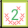
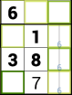
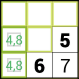
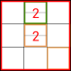
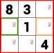

Puzzle Solution
The solution page replays the moves you made in a puzzle, showing you how each
move is implied or if it is in error. You may also pause the replay at any
point, and then explore the moves implied at that point.
Playback
 Pause stops playback, and starts calculating all the implied moves at
the stopping point.
Pause stops playback, and starts calculating all the implied moves at
the stopping point.
-
Reverse and Play resume replaying your moves, backwards or
forwards.
-
Jump Back and Jump Forward take you to the previous or next
point in the playback where you switched trails. These points are often the
best places to see what you missed, and from which to start exploring.
-
Undo and Redo go backward or forward one move.
- The slider below these buttons lets you jump to any point in the
playback.
Exploring the Solution
When playback is paused or complete, the app calculates moves implied by the
current state of the grid. You can touch an outlined square to see the insights
associated with that square. Once you've touched one, use the Apply
command to make the associated move and continue exploring.
- Yellow/green outline: a move is implied for that location. Darker
green means a shorter chain of insights leading to the move, lighter means a
longer chain. Yellow means the number of links hasn't been calculated yet.
- Purple/blue outline: a disproof is available at that
location. This is a proposed move in that location and the error that would
result, with a chain of insights between them. Purple means the disproof
leads to few or no subsequent moves; blue means it leads to many or all
remaining squares having implied moves.
In addition, these squares contain numbers that measure the insights:
- Number of steps in the insight. Smaller numbers usually mean that
the insight is easier to see.
- Coverage percentage for disproofs, meaning the percentage of
remaining unfilled squares that would have implied assignments if the
disproof were applied.
During exploration, these actions are enabled:
 Apply makes the selected move, or crosses out the disproved move.
Once you've applied one, every following move you select is automatically
applied.
Apply makes the selected move, or crosses out the disproved move.
Once you've applied one, every following move you select is automatically
applied.
 Clear clears the insights currently being shown.
Clear clears the insights currently being shown.
 Resume undoes any applied insights and resumes playing back your
moves.
Resume undoes any applied insights and resumes playing back your
moves.
-
Undo and Redo also work while exploring.
Insights
These are the insights displayed in the grid, and what they mean.
-
Forced-location assignment: a numeral has only one possible location
within a unit (block, row, or column). Shown with a unit indicator:
a square for the block, a line for the row or column.
- 
Forced-numeral assignment: a location has only one possible numeral.
Shown with all the other numerals' clock positions crossed out.
- 
Overlap: a numeral's only possible locations within a block all lie
in a line, so that numeral can't appear elsewhere in the line. Or vice
versa. Shown with the numeral in its clock position and the unit indicator
of the unit whose choices are curtailed.
- 
Locked set: a set of numerals is limited to a set of locations of the
same size within a unit, so no other numerals can go in those locations and
those numerals can't go in any other locations in the unit. Shown with the
unit indicator.
- 
Conflict error: the same numeral appears twice in a given unit.
Shown with the offending numerals in red and the unit outlined in red.
-
Barred-location error: a location is barred from having any numeral.
All numerals' clock positions are crossed out, and the location is outlined
in red.
- 
Barred-numeral error: a numeral is barred from every location in a
unit. The numeral's clock position is crossed out in all of the unit's
locations, and the unit is outlined in red.
-
Unfounded assignment: shown when an assignment has no basis in the
insights the app understands, and shown for a disproof's initial assignment.